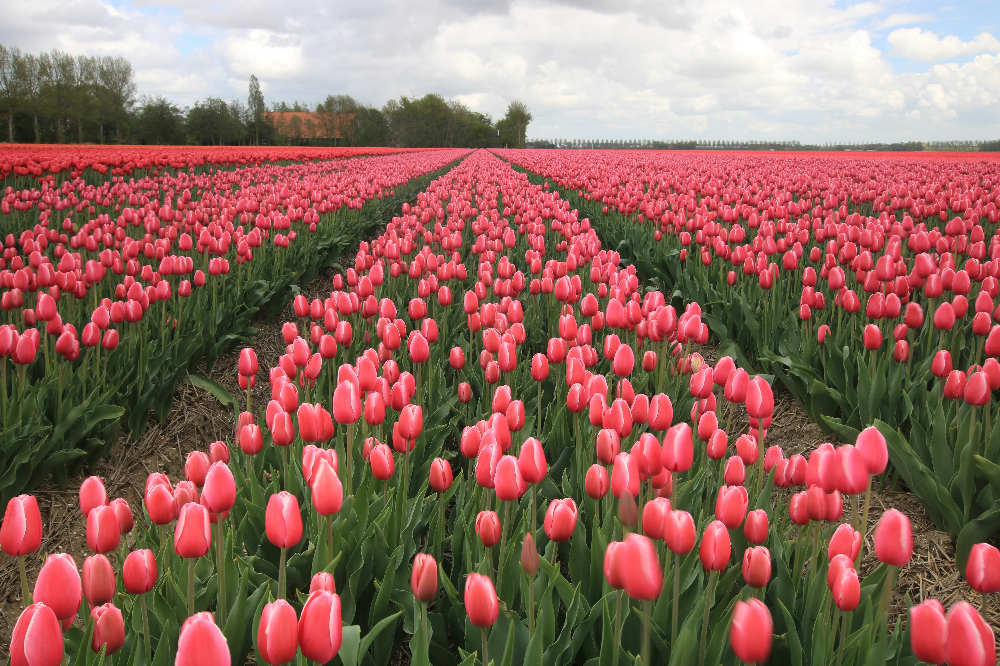
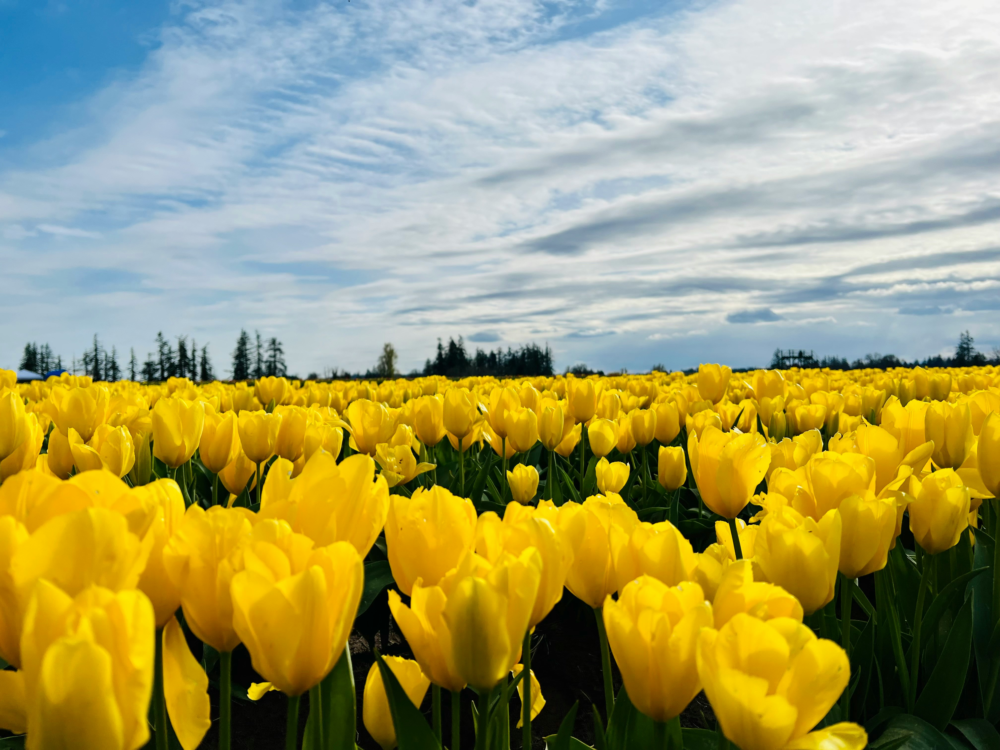
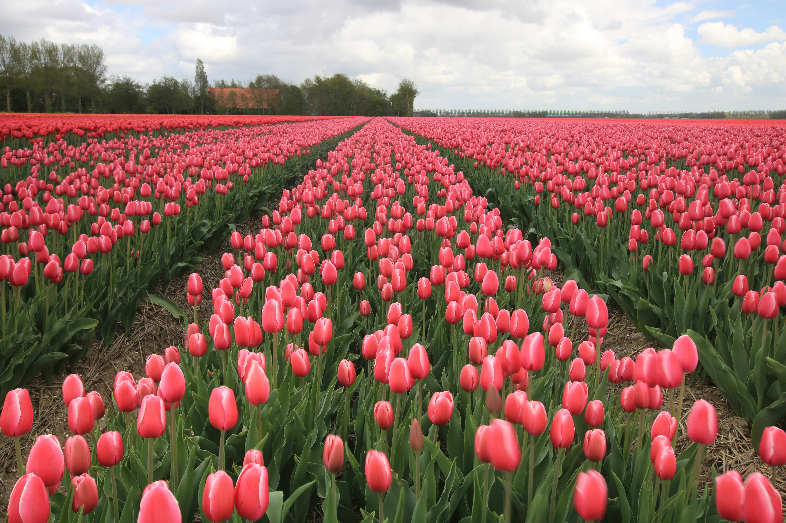
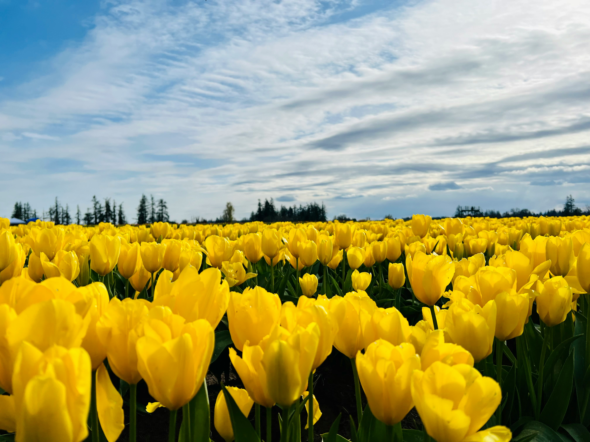
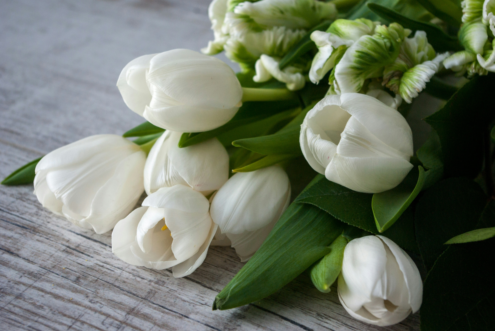
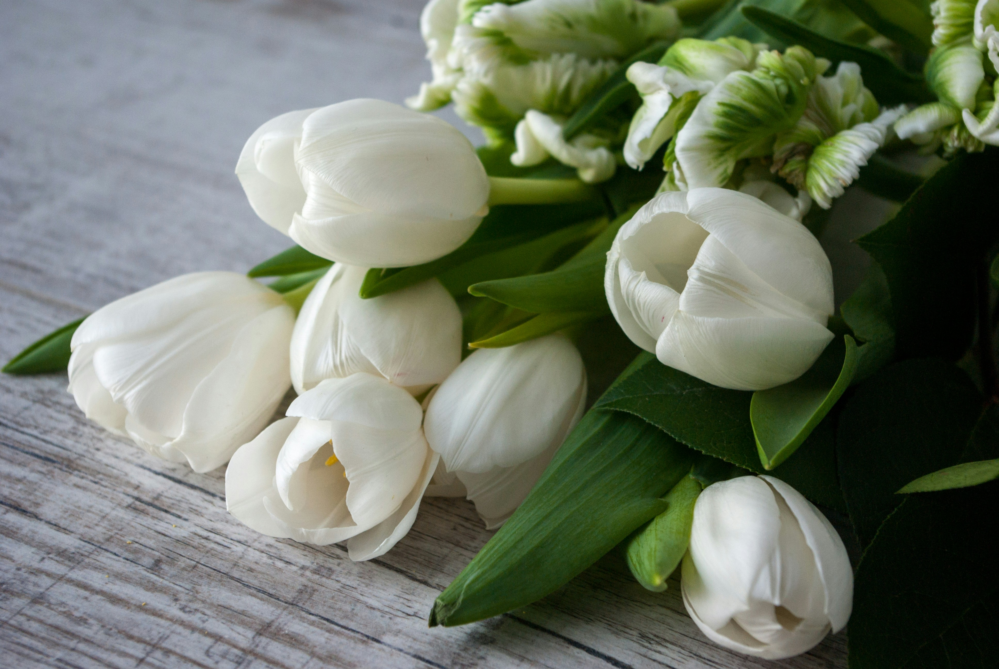

Monthly
Flower -
Tulip
 



 

about Tulip
튤립 꽃말은 색상에 따라 달라지며,
대표적으로빨간색은 사랑의 고백, 보라색은 영원한 사랑,
하얀색은 실연·순결,
분홍색은 애정·배려,
노란색은 헛된 사랑으로 알려져 있습니다.
튤립은 색상에 따라 의미가 달라지므로, 선물할 때는
상대방에게 전하고 싶은 메시지에 맞는 색상을 선택하는 것이 좋습니다.
빨간색은 고백, 보라색은 영원한 사랑,
하얀색은 사과·화해, 분홍색은 애정과 배려를 전할 때 적합합니다.
노란색은 희망과 긍정의 의미로도 많이 쓰입니다.